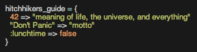

Blog Posts
The storage of data can be tricky business, no matter what language you're working with. In Ruby, the two most common ways to store data are arrays and hashes. They both have their uses - let's look into it.
Arrays
Arrays are probably the simplest of the two to understand. You have two main elements in an array: the variable name for the array, and the collection of objects in the array. There are many ways to create an array, but one common way is this:
Each object within the array is accessible by its index, where the first element in the array is always at index = 0.
As you can see, an array can include any object, including integers, floats, strings, and other arrays. This can be useful if you have a series of data you wish to have access to. The following example is an array triangles which contains three sub-arrays of triangles with different length sides.

This might useful because it allows you to manipulate each triangle individually. For example, you could write a method which tells you what kind of triangle would be formed with each set of numbers.
Hashes
Hashes are slightly more complex than arrays, but with complexity comes more flexibility. You can access the content in a hash through a key-value pair (rather than an index, as arrays use). While there are many ways to create a hash, one possible way is as follows:

You would then access the desired value using the associated key.

Part of the flexibility in a hash is that a key can be any type of ruby object (rather than just an integer).

However, it's usually better form to be consistent in the type of keyes you use.
Array vs. Hash
So you might be wondering - when is the best time to use an array versus a hash?
An array is useful when you have an ordered list of data. This does not mean that the data is in alphabetical or numerical order; it merely means that the order in which you access the data should not necessarily matter. For example, an array is particularly useful if you want to keep a list of strings or integers for later use.
A hash is useful when you have a collection of data where you do not know the order of the list but you need to access a particular value (without iterating over the entire hash). For example, a hash is commonly compared to a dictionary, where the word is the key and the definition is the value. Another example might be that you have a collection of hashes which all represent people; in those hashes, you could have key-value pairs which indicate name, age, and gender, etc.
In conclusion
Both arrays and hashes have their uses within Ruby. When programming, it's important to keep both data structures in mind so that you can choose the right one to use in a given scenario.